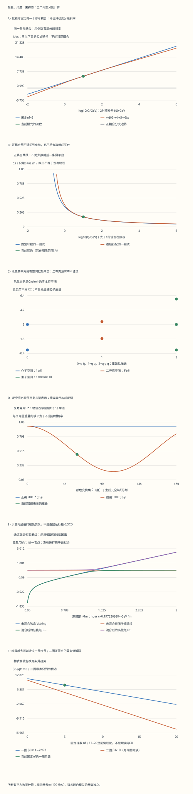

本页目录
粒子 III · QCD：颜色、尺度与强子的三条推导
前置：规范场的表示与协变导数、重整化的尺度观念，以及张量积和厄米矩阵。先完成第1—5节的色代数，再看第6—8节的尺度，最后把第9—11节接到实验。无需先背强子分类表。
1. 同一个理论，为什么高能看喷注、低能看强子？
先把三个问题分开，再把它们接起来
如果只说“距离近时夸克自由，距离远时夸克被关住”，读者仍不知道这句话从哪里来。我们需要三种不同的计算：色代数问哪些组合能消去总色荷；重整化群问同一理论的耦合怎样随分辨尺度变化；非微扰动力学问实际出现哪些强子和能级。第一种可用小矩阵精确完成，第二种在微扰范围内展开，第三种通常要用格点、有效理论与数据。前两种都不能独自代替第三种。
本页实验围绕这三种计算展开。先预测：反夸克该乘\(U\)还是\(U^*\)？两个夸克相吸就能成为色单态吗？固定同一个高能参考耦合，增加味数会怎样改变尺度斜率？两个能级相遇时，何时交叉，何时避开？每个答案都能追到一条矩阵或方程。
符号约定。沿用前两页的\(D_\mu=\partial_\mu+ig_sA_\mu\)，其中\(A_\mu=A_\mu^aT^a\)，\(T^a\)为厄米矩阵。于是\([D_\mu,D_\nu]=ig_sF_{\mu\nu}\)，且\(F_{\mu\nu}=\partial_\mu A_\nu-\partial_\nu A_\mu+ig_s[A_\mu,A_\nu]\)。若写\([T^a,T^b]=if^{abc}T^c\)，分量中的非线性项带负号。使用\(D=\partial-igA\)的教材相应改变这一号；不可从两套约定各抄一半。
2. 八个生成元：颜色是一个复向量空间
夸克的颜色波函数有三个分量\(q=(q_r,q_g,q_b)^T\)；\(r,g,b\)只是基底名称。\(U\in SU(3)\)满足\(U^\dagger U=I\)和\(\det U=1\)，并把\(q\)变为\(Uq\)。局域理论允许不同位置选择不同基底，协变导数保证比较相邻位置时的表达一致。
为什么是八个胶子？一般\(3\times3\)厄米矩阵有三个实对角元和三个复非对角元，共九个实参数；无迹条件减去一个，留下八个独立方向。取Gell-Mann基\(T^a=\lambda^a/2\)，例如
另外五个矩阵及全部乘积账表在实验中展开。约定\(\operatorname{tr}(T^aT^b)=\delta^{ab}/2\)后，直接乘矩阵可验证\(\sum_aT^aT^a=(4/3)I\)。这个\(C_F=4/3\)是表示的二次Casimir，不是夸克质量，也不是“颜色有\(4/3\)种”。
QCD的局部作用量可写成\(\mathcal L=-\frac14F_{\mu\nu}^aF^{a\mu\nu}+\sum_f\bar q_f(i\gamma^\mu D_\mu-m_f)q_f\)。非线性场强给出三胶子和四胶子相互作用；但规定作用量的形式，并没有完成束缚态求解。色代数和规范约定可对照PDG《QCD》§9.1。
3. 介子单态：不是“红加绿加蓝等于白”的口号
反夸克在反基本表示中变换。若\(q\to Uq\)，相应反颜色列向量用\(U^*\)，无穷小生成元就是\(-T^{a*}\)。因此\(q\bar q\)的九维颜色空间上，总生成元为
把系数写成\(S_{ij}=\delta_{ij}/\sqrt3\)，变换后得到\(S'_{ij}=\sum_kU_{ik}U^*_{jk}/\sqrt3=(UU^\dagger)_{ij}/\sqrt3=S_{ij}\)。这里真正做事的是幺正性，不是颜色名称。于是每个\(G^a\)都消去\(|S\rangle\)。
定义\(C_2=\sum_aG^aG^a\)。对任意向量\(|\psi\rangle\)，有\(\langle\psi|C_2|\psi\rangle=\sum_a\|G^a|\psi\rangle\|^2\ge0\)。因此\(C_2\)的零空间恰好是被所有生成元消去的空间。不是只看平均色荷\(\langle G^a\rangle\)为零：平均值可因正负抵消，而平方范数不能。
更强的检查是直接算出\(C_2=3(I-P_S)\)，其中\(P_S=|S\rangle\langle S|\)，满足\(P_S^2=P_S\)、\(\operatorname{tr}P_S=1\)。所以九维空间分成一个\(C_2=0\)方向和八个\(C_2=3\)方向，这就给出\(\mathbf3\otimes\bar{\mathbf3}=\mathbf1\oplus\mathbf8\)。
实验用\(U(\theta)=e^{i\theta T^8}e^{i\theta T^2}\)做一族非平凡复变换。它也演示一个反例：误把反夸克乘成\(U\)，即用\(U\otimes U\)，原单态一般就不再保持不变。扫描一族\(U\)只是可见的例子；全八个生成元消去单态才是连通群下不变性的完整理由。
4. 二夸克与重子：吸引和无色是两件事
两个夸克都在基本表示，所以\(G^a_{qq}=T^a\otimes I+I\otimes T^a\)。令交换算符\(P|ij\rangle=|ji\rangle\)。从生成元的完备关系
可得\(\sum_aT^a\otimes T^a=\frac12(P-I/3)\)，进而\(C_2^{qq}=\frac73I+P\)。在对称子空间\(P=+1\)，本征值为\(10/3\)、维数六；在反对称子空间\(P=-1\)，本征值为\(4/3\)、维数三。没有零本征值，所以\(\mathbf3\otimes\mathbf3=\mathbf6\oplus\bar{\mathbf3}\)不含单态。
再加第三个夸克，总生成元是三个位置上的\(T^a\)之和。候选单态为
六个非零项的平方模相加为一。三个\(U\)作用于\(\epsilon_{ijk}\)只给出\(\det U\)，而\(\det U=1\)，故\(|B\rangle\)不变。完整27维Casimir的谱为\(0\)一次、\(3\)十六次、\(6\)十次，对应\(\mathbf1\oplus\mathbf8\oplus\mathbf8\oplus\mathbf{10}\)。两个八重态有相同Casimir；仅凭这个算符不能区分它们。
这只是颜色部分。相同费米子交换时，颜色、空间、自旋和味道的总波函数必须反对称；不能在颜色\(\epsilon\)之外再随意指定其他部分。不同位置的夸克组合若要写成严格规范不变算符，还须用平行移动连接各位置。上述小矩阵描述同一颜色纤维或已运回共同位置后的表示结构。有关强子颜色组合可参阅Tong《Standard Model》第3章。
5. 为什么反三重态二夸克相吸，却仍然有色？
短距离单胶子交换中的颜色算符是\(\mathbf T_1\cdot\mathbf T_2\)。展开\((\mathbf T_1+\mathbf T_2)^2\)立即得到
在两体基本或反基本表示中\(C_1=C_2=4/3\)。介子单态于是给\(-4/3\)，八重态给\(+1/6\)；二夸克反三重态给\(-2/3\)，六重态给\(+1/3\)。在\(V(r)=\alpha_s(\mathbf T_1\cdot\mathbf T_2)/r\)这一短距离约定下，负值对应吸引，正值对应排斥。
这里可以精确指出差别：相吸要求两体色因子为负；色单态要求总Casimir为零。反三重态满足前者但不满足后者。进一步，即使某个组合含单态，也不保证自然界一定存在一个稳定、狭窄或易于辨认的强子。四夸克、五夸克、胶球等都要继续问动力学和观测，而不是只做表示分解。
6. 一圈running：先指定同一个参考值再比较
令\(\alpha_s=g_s^2/(4\pi)\)。以\(Q\)代表所选重整化尺度，本页一圈方程为
不要急着记\(\Lambda\)公式。先令\(u=1/\alpha_s\)，链式法则给\(du/d\ln Q=\beta_0/(2\pi)\)。固定边界\(\alpha_s(Q_0)=\alpha_0\)后，
因此倒数图是一条直线。\(\beta_0>0\)时，向高能走，倒数增大而耦合减小；\(n_f=17\)时\(\beta_0=-1/3\)，方向相反。这是“非阿贝尔不自动等于渐近自由”的实际可操作反例。
默认取\(Q_0=100\) GeV、\(\alpha_0=0.120\)。这是教学边界条件，不是本页测出的世界平均值。在\(Q<Q_0\)处增加\(n_f\)，会使正的\(\beta_0\)减小，倒数减少得更慢，故耦合反而较小。若改成“固定相同\(\Lambda\)”来比较，则可能得到另一趋势，因为你同时改变了高能边界条件。讨论参数影响之前，要先说固定的是什么。
当倒数到零，一圈表达式出现极点。继续延拓会得到负的实数\(\alpha_s\)；数学上不是“没有实数”，但它不属于从正\(\alpha_0\)出发、跨极点前的正耦合分支。实验保留倒数用于诊断，将物理读数标为不适用，也不会把大于一的耦合截成一条假平台。
把积分常数写成\(\Lambda=Q_0\exp[-2\pi/(\beta_0\alpha_0)]\)可恢复\(\alpha_s(Q)=4\pi/[\beta_0\ln(Q^2/\Lambda^2)]\)。\(\beta_0>0\)时它是本近似的红外极点尺度；\(\beta_0<0\)时却是紫外极点，不能仍称它为现实QCD的低能尺度。极端参数下直接指数可能超出浮点表示范围，账表仍保留\(\ln\Lambda\)；不把数值下溢当成真的零能标。
7. 跨阈值：连续的是本阶近似的边界值
实验同时计算一条匹配曲线：\(Q<1.5\) GeV用三味，\(1.5\le Q<5\)用四味，\(5\le Q<175\)用五味，再高用六味。这三个数是教学阈值。每段都积分\(du/d\ln Q=\beta_0(n_f)/(2\pi)\)，到边界时把本段的\(u\)交给下一段，不能重新任取同一个\(\Lambda\)。
例如从\(100\) GeV降到\(2\) GeV，中间经过\(5\) GeV：
这解释了图中的折线：值连续，斜率改变。实验把每段上下限、活跃味数、对数比和倒数增量全部列出。固定味数控件只改变固定味数曲线，匹配曲线的三至六味规则不随它改动。
这种连续性是所选一圈精度下的匹配，不是“running耦合在任意阶都必须连续”的定理。更高阶匹配系数、质量方案和匹配尺度都要一致；最终可观测量的方案依赖在各部分之间补偿。相应公式和约定见PDG §9.1.1 的阈值匹配式。
8. 二圈零点：可以提出研究问题，不能据此画完相图
在相同\(\ln Q\)约定下再留一阶，
如果\(\beta_0>0\)且\(\beta_1<0\)，截断多项式除了零还有\(\alpha_*=-4\pi\beta_0/\beta_1\)。比如\(n_f=16\)时\(\beta_0=1/3\)、\(\beta_1=-302/3\)，得\(\alpha_*=2\pi/151\approx0.04161\)，至少处在小耦合候选范围；把味数往下调，候选零点可能很大，忽略更高阶就缺乏控制。
对一个真正的弱耦合红外不动点，尺度降低时流可趋近有限耦合，而不是不断变强。因此渐近自由、禁闭、手征对称性破缺和共形行为必须分别讨论。实验只列出二圈候选，不宣称找到了现实QCD的共形窗口下边界。这条研究路线的经典原始工作是Banks与Zaks关于无质量矢量型规范理论相结构的论文。
9. 两通道势：把“弦断裂”拆成可理解的能级问题
长距离静态源之间的势不能靠一圈running求完。为理解能级图，先规定一个示意有效模型：一条弦态和一个双强子态，具有同一能量零点，
这里\(r\)用fm，\(\sigma\)用GeV²，能量用GeV，\(\hbar c=0.1973269804\) GeV·fm；\(\alpha_V=0.3\)是固定示意势参数，与前面的running曲线分开。默认\(\sigma=0.18\) GeV²、\(E_{\rm th}=1.2\) GeV、\(\delta=0.08\) GeV。它们没有拟合实际强子质量。
解二次特征方程即可得到
\(\delta=0\)时两个对角能量可以直接交叉；\(\delta>0\)时最小间隔为\(2\delta\)。低能态中“弦态”的权重由谱投影给出
这让图像有了因果关系：短距离低能态主要像弦态；过了交叉区域，它主要像双强子态。若\(\sigma=0\)且\(E_{\rm th}>0\)，本模型的\(V_s\)一直为负，没有正距离交叉；若\(\delta=0\)且恰好\(V_s=E_{\rm th}\)，单一本征向量不唯一，权重应标为不适用，不能硬套“各半”。
解析交叉点由\(\sigma r^2/(\hbar c)^2-E_{\rm th}r/(\hbar c)-(4/3)\alpha_V=0\)求得。账表把解析交叉点和浮点直接代入分列：最后几位的舍入误差可能假装选中了简并子空间的一侧，那不是物理预测。
真正的弦断裂研究从格点关联函数提取能级和混合信息，还要控制格距、体积、夸克质量等。本模型只帮你读懂“为什么会出现避免交叉”。可进一步阅读Bali等对两味格点QCD弦断裂的原始计算。
无脚本对照：六份固定记录包含8个完整Gell-Mann矩阵，9/9/27维总Casimir、单态及其生成元作用、SU(3)变换、401个能标的固定/匹配计算、181个颜色角和301个两通道间距。下表的耦合来自当前模式；颜色与势参数独立。全部都是模型计算。

| 预设 | Q/GeV | 当前nf | 1/αs | αs | 错误介子重叠² | 交叉r/fm | 解析交叉处低能弦权重 |
|---|---|---|---|---|---|---|---|
| default | 10 | 5 | 5.5237469 | 0.18103654 | 0.44861399 | 1.3782929 | 0.5 |
| low | 0.01 | 3 | -4.0960478 | 不适用 | 0.44861399 | 1.3782929 | 0.5 |
| seventeen | 10 | 17 | 8.4554893 | 0.11826637 | 0.44861399 | 1.3782929 | 0.5 |
| uv-pole | 1000000 | 20 | -0.92036613 | 不适用 | 0.44861399 | 1.3782929 | 0.5 |
| crossing | 10 | 5 | 5.5237469 | 0.18103654 | 0.44861399 | 1.3782929 | 不适用 |
| no-string | 10 | 5 | 5.5237469 | 0.18103654 | 0.44861399 | 不适用 | 不适用 |
下载六份完整记录。不适用值保存为null：包括越过正耦合分支的αs、σ=0时不存在的交叉距离，以及δ=0精确简并时未被选定的单态权重。浮点交叉代入另列，不能拿舍入残差选基。
10. 质子质量、手征对称与质量隙：三个名字不能混用
“质子由三个价夸克组成”记录的是量子数，不是三个静止小球质量相加。QCD的能动量张量还包含夸克和胶子场的动能、相互作用及量子效应。即使取轻夸克质量很小，强相互作用仍可通过量纲嬗变产生尺度。把质量贡献分拆成百分比时，必须说明算符定义、重整化方案和尺度；不能把某种分解当成唯一的组成饼图。相关推导见Ji的核子质量分解原始论文，以及其后对分解含义与适用范围的说明。
再区分颜色与味道。颜色\(SU(3)_c\)是规范结构；忽略少数轻夸克质量时，近似手征对称性作用在左、右手味空间。若全局\(SU(n_f)_L\times SU(n_f)_R\)在真空中降到矢量子群，会有\(n_f^2-1\)个Goldstone方向；小的显式夸克质量使相应介子成为伪Goldstone。最低阶关系可写成\(m_\pi^2=B(m_u+m_d)\)，其中\(B\)是需另行确定的低能常数。这个式子没有说“所有强子质量都正比于夸克质量”，也没有把颜色规范冗余物理地打破。
“禁闭”关心有色自由渐近态及相关非微扰现象；“质量隙”关心真空上方谱是否有严格正的间隔；“手征破缺”关心全局味对称及真空。含无质量夸克的理论可能有Goldstone玻色子，所以不能照搬纯Yang–Mills的质量隙问题。Clay的正式问题要求在四维构造满足相应公理的非平凡量子Yang–Mills理论并证明正质量隙；它并不把“证明禁闭”写成同一个命题。截至本页复核日期2026-09-13，Clay仍将该问题列为未解决。
11. 从理论到喷注：真正测量的是什么？
实验测量的是末态粒子的动量、能量沉积、轨迹和由此重建的截面或喷注。喷注提供硬部分子动力学的证据，但不是一个有色夸克直接抵达探测器的照片。计算则需明确可观测量，组织短距离系数与长距离输入。
以适用因子化的强子碰撞截面为例，结构上写成\(f_{a/h_1}\otimes f_{b/h_2}\otimes\hat\sigma_{ab}\)，并加上所需末态函数和幂次修正。PDF、硬系数和因子化尺度共同构成一个约定一致的预测。改变尺度会在这些部分之间重新分配贡献；有限阶结果的剩余尺度依赖提供不确定性线索，不是全部理论误差。
有一个可亲手做的判据：若把一个末态粒子换成两个几乎共线、动量和相同的粒子，或添加一个能量趋零的粒子，测量函数是否连续回到原值？这就是红外与共线安全的基本思路。它使实辐射与虚修正中的相关奇异性有机会抵消；初态共线项还要按因子化规则进入PDF。实验切割、喷注定义、强子化和探测器效应都不能因写出“\(\alpha_s\)很小”就自动消失。
进阶时可沿三个方向读：用格点连续极限研究强子与弦断裂；用有效理论和高阶计算组织多尺度对数；用不同过程约束PDF与\(\alpha_s\)并比较一致性。开始前先确认哪一个量是观测，哪一个是反演参数，哪一个只是示意模型输入。
12. 八个迁移问题：把推导带到新情形
1 · 平均色荷全为零，就已经是色单态了吗？
不够。对某个态，\(\langle G^a\rangle=0\)可能来自正负抵消；应检查\(G^a|\psi\rangle=0\)。由于\(C_2\)是平方和，\(\langle C_2\rangle=0\)才迫使每项\(\|G^a|\psi\rangle\|^2\)都为零。混合态也应检查其支撑是否全在零空间，不能只看一组平均值。
2 · 为什么八个“带颜色又带反颜色”的胶子，不是九个？
矩阵空间有九维，分成无迹的八维和单位矩阵的一维。单位矩阵对应\(\mathbf3\otimes\bar{\mathbf3}\)中的单态方向；\(SU(3)\)的李代数只取无迹部分，故规范场有八个生成元方向。不能把九个颜色对都当成独立的\(SU(3)\)胶子。
3 · 二夸克相吸的色因子−2/3，怎样一步算出来？
反对称子空间的总Casimir为\(4/3\)，每个夸克的Casimir也为\(4/3\)。代入\(\frac12(C_{\rm total}-C_1-C_2)\)得\(\frac12(4/3-4/3-4/3)=-2/3\)。但总Casimir仍非零，说明它有色。负势能系数与色单态不是同一个判断。
4 · 固定αs(100 GeV)，增大nf后，10 GeV处耦合为什么可能变小？
因为\(\ln(10/100)<0\)。增大\(n_f\)会减小\(\beta_0\)，负的倒数增量绝对值随之减小，低能倒数更大，故正耦合更小。这与固定\(\Lambda\)比较的答案可以不同：那是另一组边界条件。实验的两条曲线始终从同一参考点出发。
5 · 一圈极点已经出现，是否证明了禁闭？
没有。极点首先表明这条微扰表达式不能继续承担定量任务。禁闭还涉及非微扰态空间和长距离动力学，需要额外分析。反例是本页17—20味的固定味数理论：同一个方程可以出现紫外极点，不能把任何极点都解释成低能禁闭。
6 · 若把δ连续降到0，交叉点的各半混合是不是仍然唯一？
对每个\(\delta>0\)，在\(V_s=E_{\rm th}\)处的非简并低能态确有各半权重。但在恰好\(\delta=0\)时，矩阵变成\(E_{\rm th}I\)，任意正交基都是本征基。极限中选出的向量只是一个可能选择，不能把它提升成简并点本身的唯一物理结论。
7 · 二圈候选α*很大时，为什么不能宣布一个红外不动点？
因为求根只保证被截断的二、三次多项式相消。若\(\alpha_*\)很大，更高次项可能同样大，根的位置甚至存在性都不受控制。应比较高阶、方案与非微扰信息。弱耦合候选有系统展开的机会；“方程上能求出正根”本身不够。
8 · 把喷注里的一个粒子裂成两个共线粒子，为什么是有用的检查？
它测试测量定义是否对不可分辨的共线结构保持稳定。若测量函数在这个极限中跳变，实辐射与虚修正通常不能按预期抵消，朴素固定阶预测可能不适用。通过这个检查也不意味着全部误差消失：还要处理初态因子化、尺度、多尺度对数、强子化与探测器。